隆德大学 · 心理学硕士
主修高级数据分析方法、认知神经科学、社会心理学、情绪心理学、性别心理学与发展心理学，多门课程获得 A。研究训练重点包括眼动实验设计、Tobii 设备与眼动数据处理，并以数据分析和认知神经科学构成研究基础。
PORTFOLIO / XINYI HE
Psychology Student · Marketing & Operations · AI Tool Builder
隆德大学心理学硕士在读，本科毕业于四川师范大学心理学专业。我的经历横跨心理学研究、市场调研、用户洞察、项目运营、品牌营销和校园组织管理，擅长把复杂问题拆成可以调研、分析、落地和复盘的行动方案。
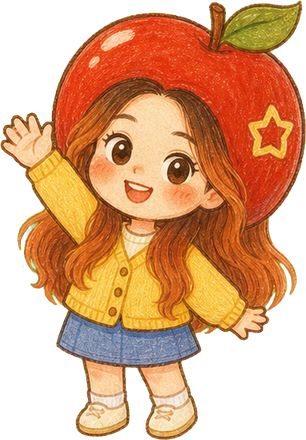
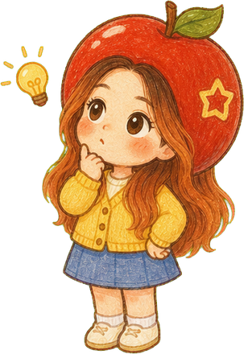
still learning,
still making ✳
02 / EDUCATION
我的学习路径以心理学为核心，同时连接数据分析、社会行为、发展心理、情绪与性别议题。它让我不仅关注“人说了什么”，也关注行为背后的动机、情境、群体差异和可验证的数据证据。
主修高级数据分析方法、认知神经科学、社会心理学、情绪心理学、性别心理学与发展心理学，多门课程获得 A。研究训练重点包括眼动实验设计、Tobii 设备与眼动数据处理，并以数据分析和认知神经科学构成研究基础。
GPA 3.5/4.0，学院前 8%。主修心理学数据分析、营销心理学、心理学研究方法、人力资源管理等课程。
校级奖学金、三好学生、优秀学生干部；省级大学生创新创业训练计划校赛二等奖。
03 / EXPERIENCE
服务于品类判断、竞品观察和市场机会识别。能够收集行业、产品、价格、渠道和传播信息，整理成可支持讨论的研究结论。
服务于目标人群理解、需求优先级判断和产品沟通方向。通过访谈、问卷、行为观察和心理学方法，识别用户动机、场景、痛点与决策阻力。
服务于活动复盘、内容表现评估和策略调整。使用 Python / SPSS 整理数据、观察趋势、解释结果，把复杂发现转化为清晰报告。
服务于营销方案讨论、上市案例复盘和问题解决。能够拆解目标、人群、场景、信息层级、渠道触点和结果指标，形成下一步行动建议。
服务于核心信息提炼、传播表达优化和消费者理解效率提升。判断文案、视觉、活动和品牌触点是否帮助用户快速理解、记住并产生兴趣。
服务于跨团队执行、材料沉淀和工作流推进。能够跟进进度、整理资料、输出会议纪要和复盘文档，并支持英文资料阅读与沟通。
05 / PORTFOLIO
我把作品集整理为三类学习型案例：品牌与产品案例研究、新品上市复盘、电商内容观察。重点不是宣称我完成了品牌决策，而是展示我如何理解成熟产品、拆解市场表达、提炼分析框架，并沉淀为可迁移的营销判断。
品牌与产品案例研究
围绕一个成熟香薰产品，观察它如何通过命名、感官线索、使用场景和内容触点建立消费者认知，并拆解背后的品类表达逻辑。
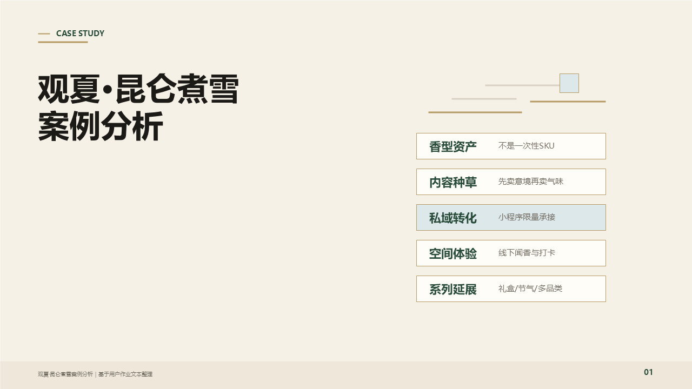
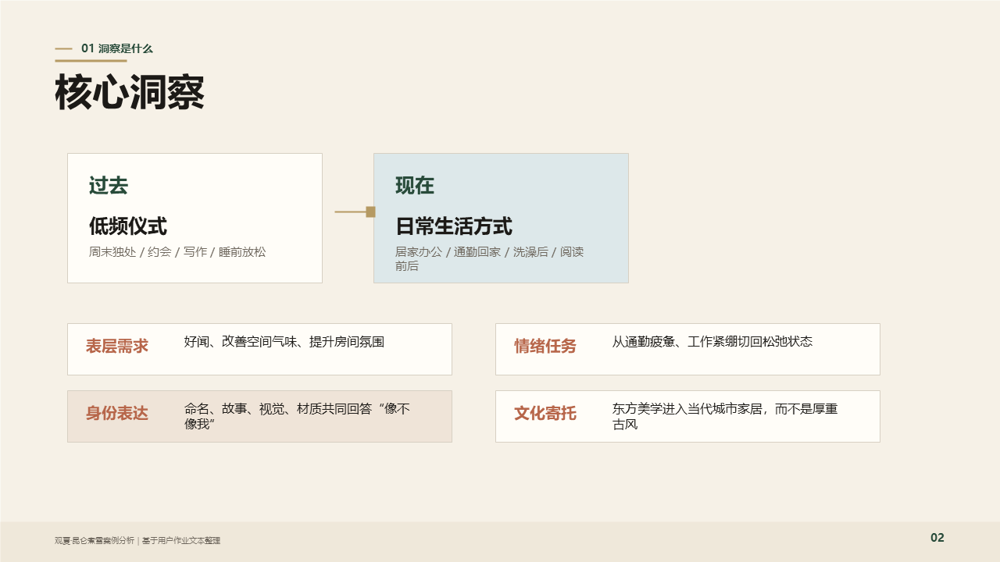
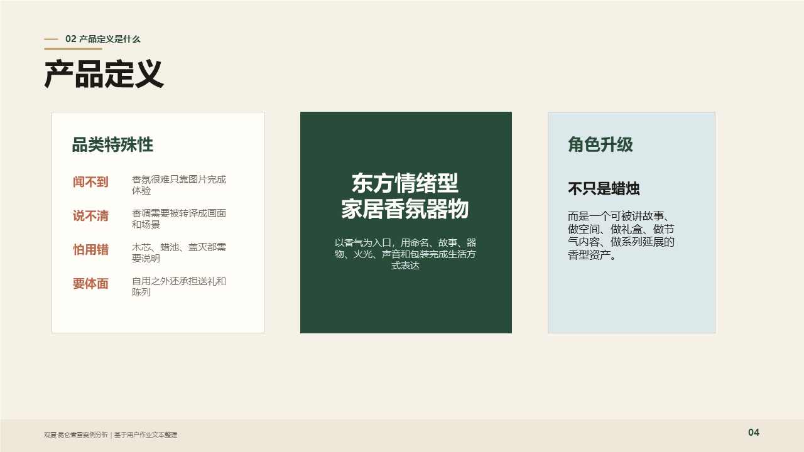
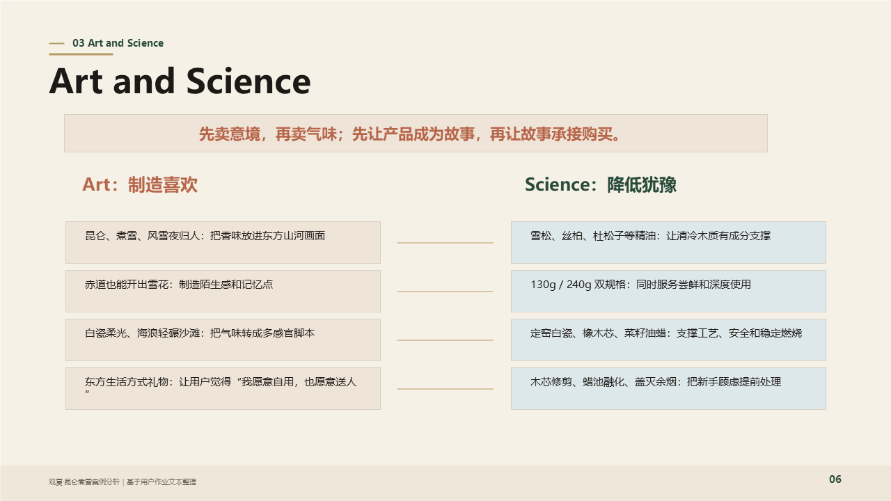
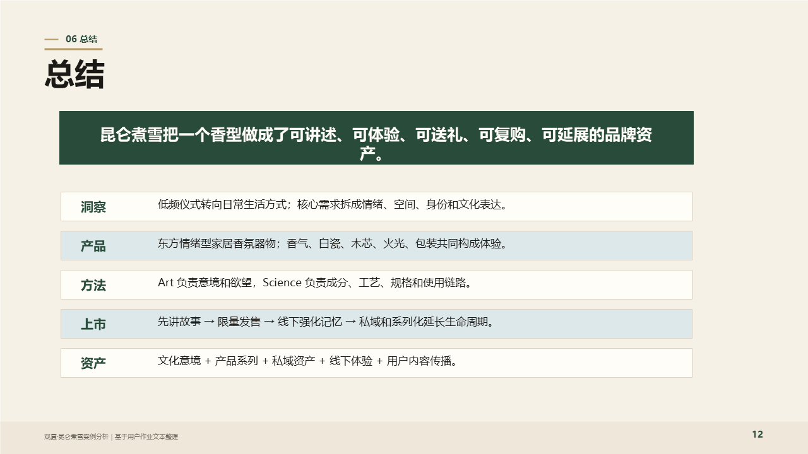
新品上市案例复盘
针对已成型的身体护理新品，复盘它可以如何提炼核心卖点、连接目标人群、规划渠道触点，并评估上市表达是否清晰一致。
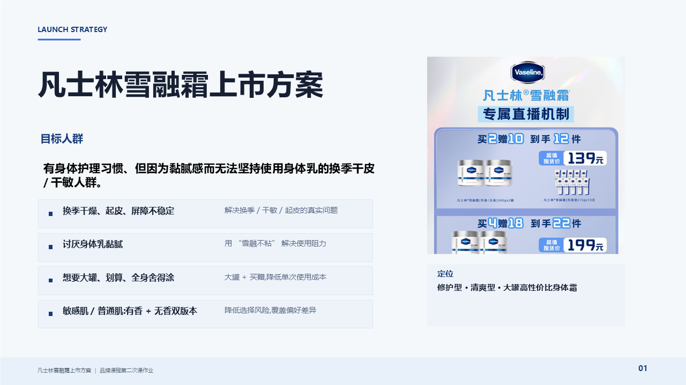
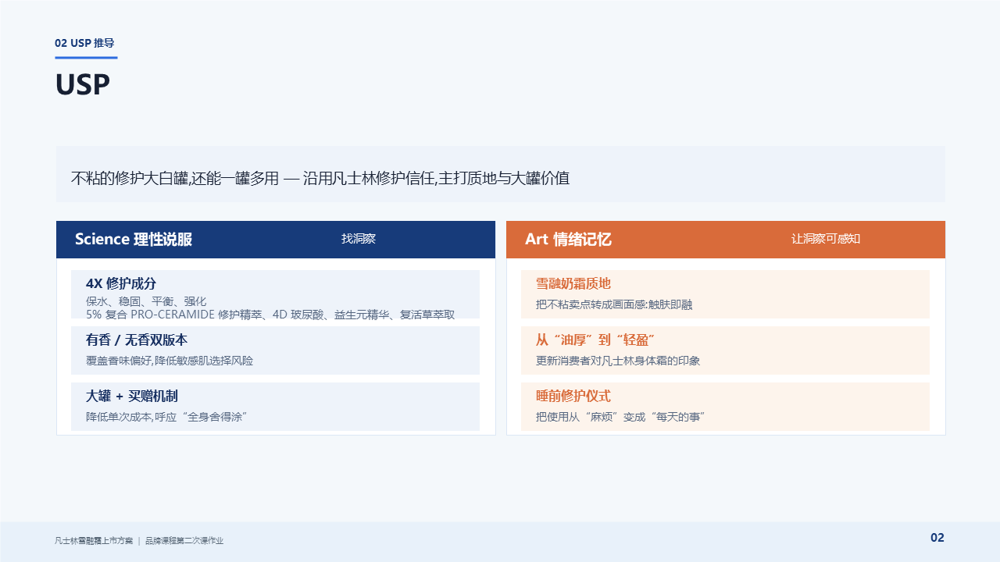
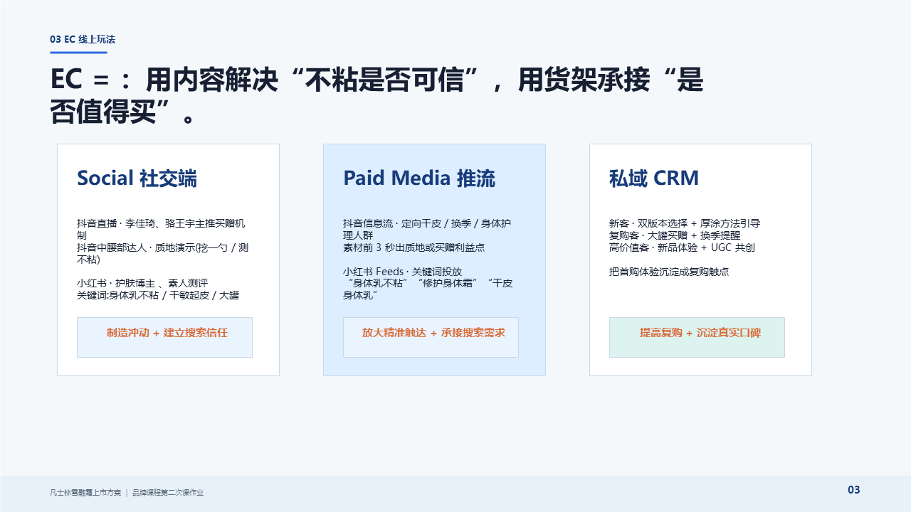
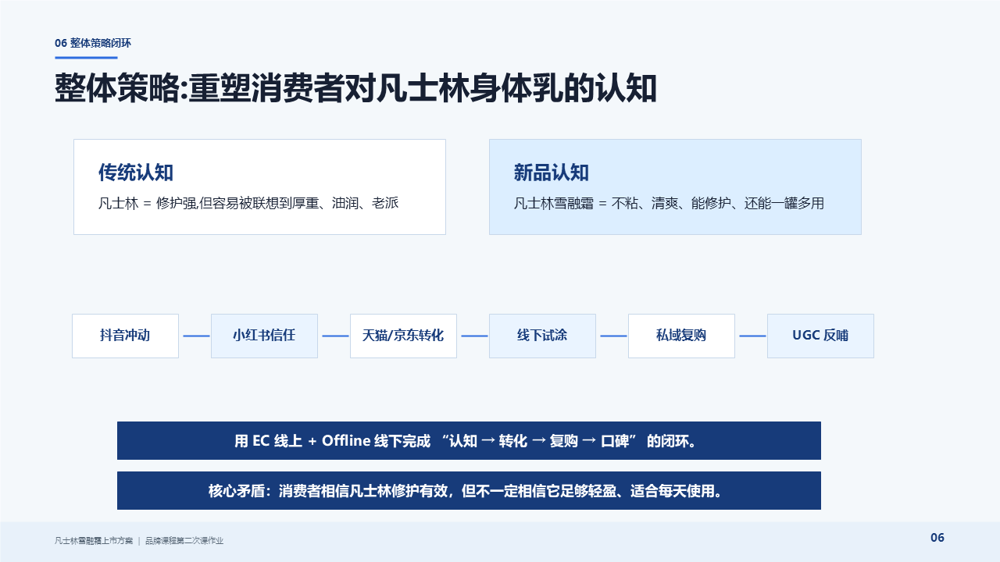
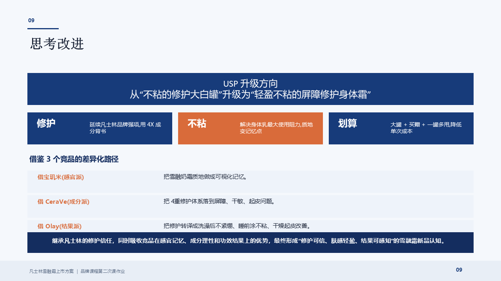
电商内容与搜索观察
围绕身体护理产品在电商与小红书场景中的内容表达，分析关键词、视觉层级、核心功效、人群场景和信任背书如何影响理解与转化。
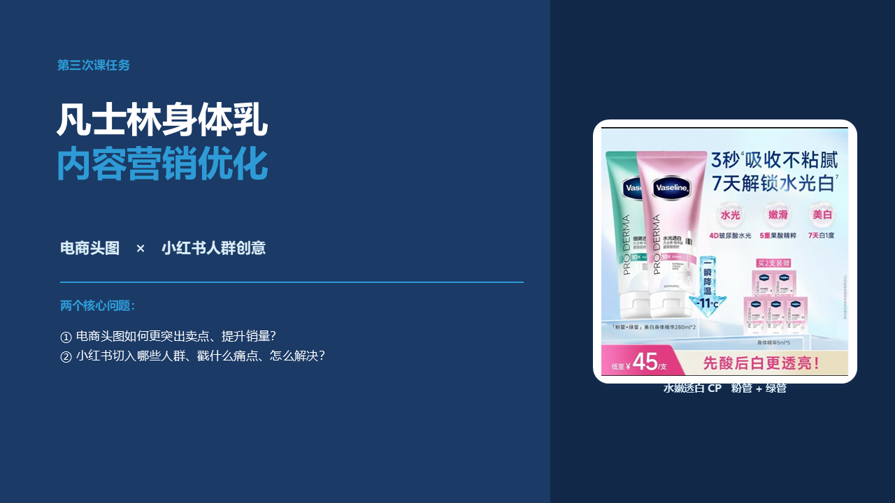
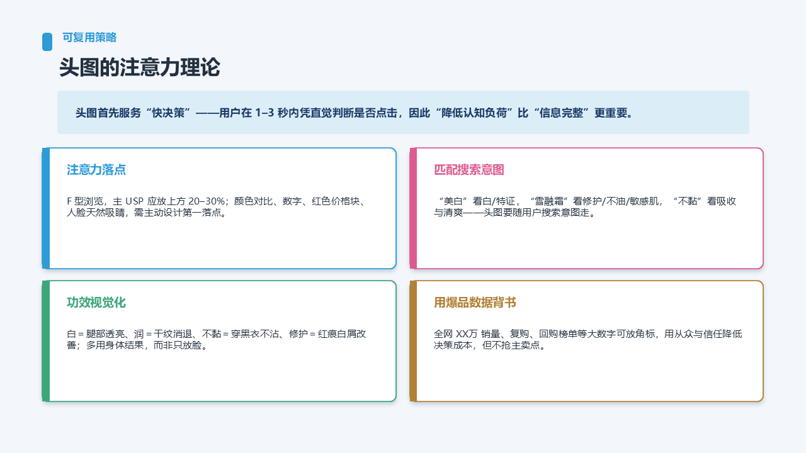
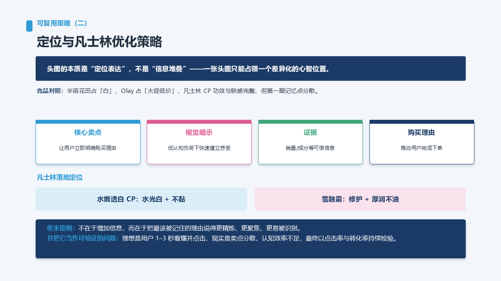
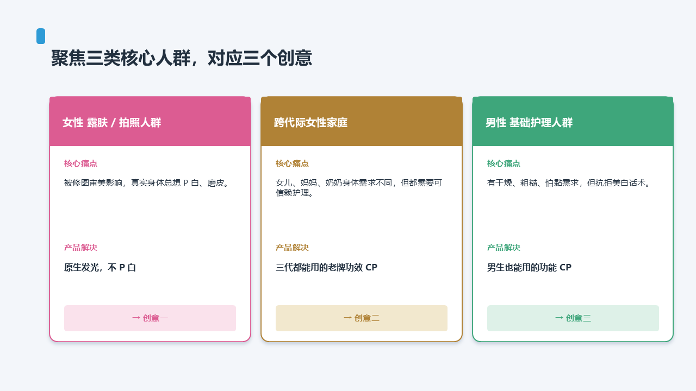
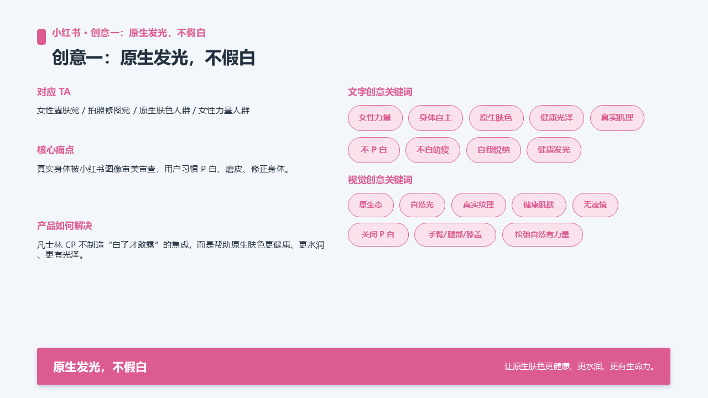
06 / LEARNING
⌂Lund / Chengdu
✦Psychology · Marketing · AI tools